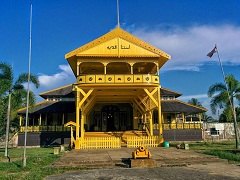

Dibangun pada tahun 1771 oleh Sultan Syarif Abdurrahman Alqadrie yang merupakan sultan pertama Kesultanan Pontianak, Keraton Kadriah berada di Jalan Tritura, Pontianak. Bangunan didominasi oleh warna kuning dan terbuat dari kayu belian, kayu di Kalimantan yang dikenal sebagai kayu besi karena kekuatannya. Di halaman, terdapat meriam kuno peninggalan Jepang dan Portugis. Sedangkan di dalam bangunan, Anda bisa menemukan singgasana sultan dan permaisuri, lengkap dengan foto-foto, pakaian sultan dan berbagai koleksi lain milik sultan. Salah satu koleksi yang unik adalah sebuah Al Quran yang ditulis tangan sendiri oleh Sultan Syarif Abdurrahman Alqadrie.

Desa Beting, Pontianak, Kalimantan Barat